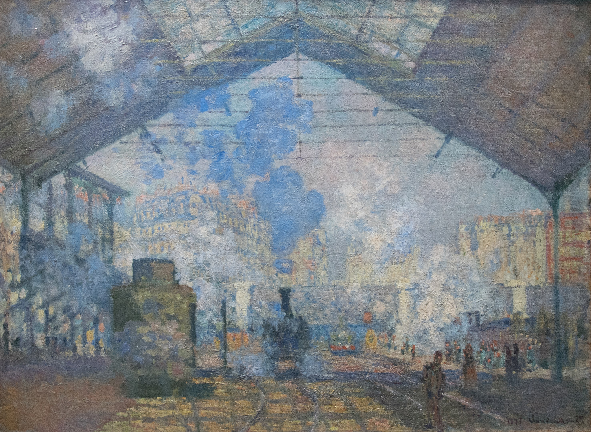
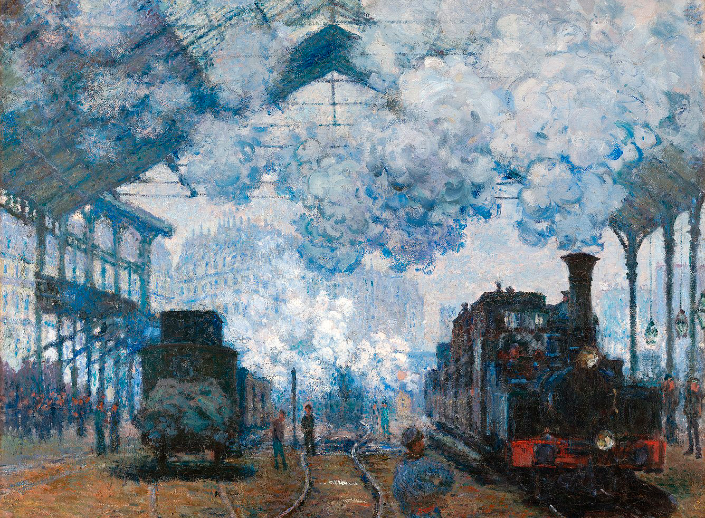
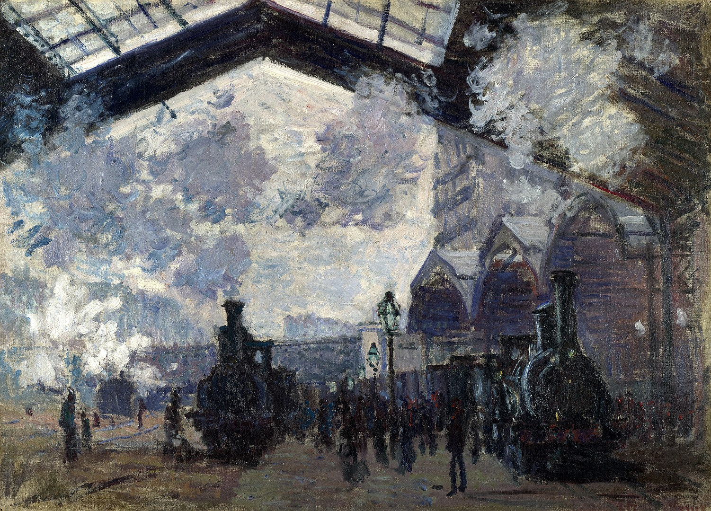

5
Gare Saint-Lazare
“
The real subject of every painting is light.
———— Claude Monet
”
Hover to view the whole painting

La Gare Saint-Lazare, le train de Normandie
1877
The Art Institute of Chicago
Chicago, United States

La Gare Saint-Lazare
1877
Musée d'Orsay
Paris, France

La Gare Saint-Lazare, arrivée d'un train
1877
Harvard Art Museums: Fogg Museum
Cambridge, United States

La Gare Saint-Lazare
1877
The National Gallery, London
London, United Kingdom